期中复习5大类型25个考点（前3章）
【北师大版2024】

【基础概念易错篇】 2
【考点1 认识立体图形】 2
【考点2 几何体的展开图】 3
【考点3 截一个几何体】 4
【考点4 从不同方向看几何体】 5
【考点5 有理数的相关概念】 5
【考点6 科学记数法】 6
【考点7 近似数】 7
【考点8 代数式的概念及其书写规则】 7
【考点9 代数式的值】 8
【考点10 单项式】 8
【考点11 多项式】 8
【考点12 同类项与合并同类项】 9
【计算篇】 9
【考点13 有理数的混合运算】 9
【考点14 整式的加减与化简求值】 10
【实际应用篇】 11
【考点15 有理数的实际应用】 11
【考点16 整式加减的实际应用】 14
【规律与新定义篇】 15
【考点17 数式规律问题】 15
【考点18 图形规律问题】 17
【考点19 新定义问题】 17
【压轴篇】 18
【考点20 数轴上的折叠与裁剪问题】 18
【考点21 利用绝对值的几何意义求最值】 20
【考点22 多绝对值的分类讨论问题】 20
【考点23 由整式加减解决整除问题】 21
【考点24 整式加减解决图形周长问题】 21
【考点25 数轴动点问题】 22

【基础概念易错篇】
【考点1 认识立体图形】
1．下列说法不正确的是（ ）．
①长方体一定是柱体；②八棱柱有10个面；③六棱柱有12个顶点；④用一个平面去截几何体，若得到的图形是三角形，则这个几何体一定有一个面的形状是三角形．
A．① B．④ C．①④ D．②③
2．（24-25六年级上·山东泰安·期中）下图为小文同学的几何体素描作品，该作品中不存在的几何体为（ ）
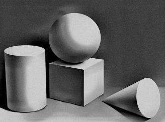
A．棱柱 B．球 C．圆柱 D．棱锥
3．下列几何体中，棱柱有（ ）

A．1个 B．2个 C．3个 D．4个
4．下列各选项中的图形绕虚线旋转一周后，得到的几何体是圆柱的是（ ）
A． B．
B． C．
C． D．
D．
5．将一张正方形纸片按图①、图②所示的方式依次对折后，再沿图③中的虚线剪裁，最后将图④中的纸片打开铺平，所得到的图案是（ ）
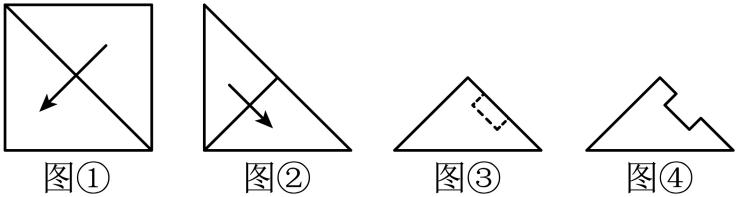
A． B．
B．
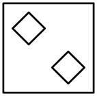
C．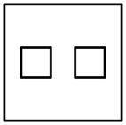
D．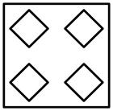
【考点2 几何体的展开图】
1．下列选项中，左边的平面图形能够折成右边封闭的立体图形的是（ ）
A． B．
B．
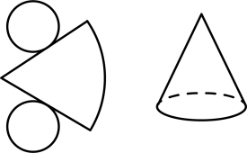
C． D．
D．
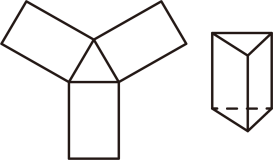
2．（24-25七年级上·北京石景山·期末）下列图形中，能由正方体纸盒展开后得到的图形是（ ）
A． B．
B．
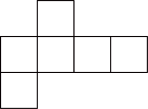
C．
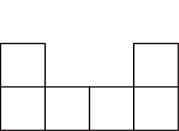
D．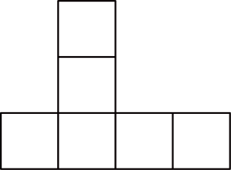
3．如图所示的正方体的表面展开图是（ ）

A． B．
B．
C．
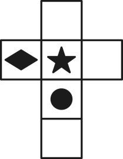
D．
4．如图是一个正方体纸盒的展开图，当折成纸盒时，与数字6重合的数字是 ．
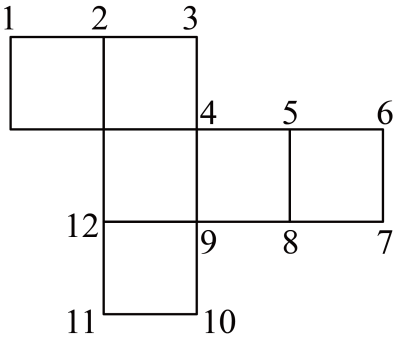
5．图1和图2中所有的正方形都相同，将图1的正方形放在图2中①②③④⑤的某一位置，所组成的图形能围成正方体的位置有（ ）
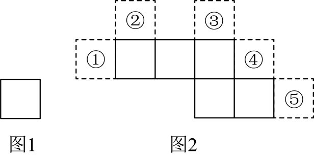
A．1个 B．2个 C．3个 D．4个
【考点3 截一个几何体】
1．（25-26七年级上·陕西·期中）用一个平面去截下面的几何体，不能得到三角形截面的是（ ）
A．
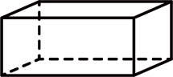
B．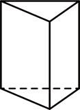
C．
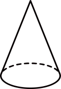
D．
2．（24-25七年级上·陕西汉中·期末）用一个平面去截圆柱体，所得到的截面形状可能是圆还可能是 ．(写出一个符合条件的形状即可)
3．（24-25七年级上·重庆·期末）用一个平面取截一个三棱柱，最多可以截出 边形．
【考点4 从不同方向看几何体】
1．（24-25七年级上·陕西西安·期末）如图是由5个相同的小正方体组成的立体图形，则从上面看得到的形状图是（ ）
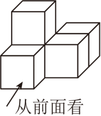
A． B．
B． C．
C．
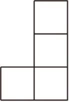
D．
2．（24-25九年级下·全国·期末）根据下列从不同方向看物体的图形，几何体是 ．

3．用一些大小相同的小正方体搭成一个几何体，使得从正面和上面看到的这个几何体的形状如图所示，那么组成这个几何体的小正方体的块数至少为（ ）
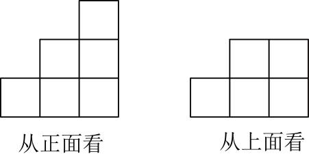
A．7 B．8 C．9 D．10
4．（24-25七年级上·四川成都·期末）一个几何体由几个大小相同的小立方块搭成，从它的正面和上面看到的形状图如图所示，若这个几何体最多由a个小立方块组成，最少由b个小立方块组成，则a+b= ．

【考点5 有理数的相关概念】
1．（25-26七年级上·江苏南通·阶段练习）下列语句正确的是（ ）．
①绝对值最小的数是0；②平方等于它本身的数只有1；③一个有理数在数轴上表示的点离开原点越远，这个有理数就越大；④倒数等于本身的数有0和±1；
A．4个 B．3个 C．2个 D．1个
2．（24-25七年级上·陕西宝鸡·期末）小明的姐姐在银行工作，她把存入3万元记作+3万元，那么取出1万元记作 ．
3．（25-26七年级上·广东揭阳·阶段练习）下列四个数：−(−5),−3,−−4,+(−1)，其中负数的个数是（ ）
A．0个 B．1个 C．2个 D．3个
4．（25-26七年级上·安徽阜阳·阶段练习）若x为有理数，且式子2025−x−7存在最大值，则该最大值是（ ）
A．2024 B．2025 C．2026 D．2027
5．（25-26七年级上·天津南开·阶段练习）若x、y互为相反数，a、b互为倒数，c的绝对值等于4，则x+y3−−ab2025−c= ．
6.（25-26七年级上·河南郑州·阶段练习）5个城市的国际标准时间（单位：时）在数轴上表示如图所示，那么北京时间2025年10月1日20时应是（ ）
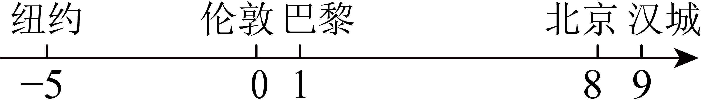
A．纽约时间2025年10月1日5时 B．伦敦时间2025年10月1日12时
C．巴黎时间2025年10月1日7时 D．汉城时间2025年10月1日19时
【考点6 科学记数法】
1．（25-26七年级上·吉林长春·期末）2021年9月15日晚8点，第十四届全运会开幕式在西安奥体中心举行．西安奥体中心是西北功能最齐备、规模最大的体育中心，“一场两馆”呈“品”字形布局，总建筑面积52.05万平方米，数据52.05万用科学记数法表示准确的是（ ）
A．5.205×102 B．5.205×104 C．5.205×103 D．5.205×105
2．（24-25七年级上·辽宁铁岭·期中）用科学记数法表示的数2.024×105的原数为 ．
3．（24-25七年级上·湖北武汉·期末）据统计，2023年武汉经济技术开发区（汉南区）有常住人口67.68万人，将数据67.68万用科学记数法表示为6.768×10n的形式，则n的值是 ．（备注：1万=10000）
4．（24-25七年级下·辽宁沈阳·期末）按照央行发布的2024年金融统计数据，去年全国住户人民币存款增加了约14万亿元．一台点钞机的速度大约为每小时8×104张，按每天点钞7小时计算，如果让点钞机点一遍14万亿面值为100元的人民币，一台点钞机大约要点 天．
【考点7 近似数】
1．（24-25七年级上·安徽合肥·期末）超越数主要有自然常数（e）和圆周率（π）．自然常数的知名度比圆周率低很多，但实际上自然数e是数学中的一个重要常数，它与指数函数、对数函数、复利增长、概率统计、微积分以及物理学和工程学等领域有着广泛的应用．e的出现使得我们能够更好地描述和理解自然界和现实世界中的增长、衰减和变化过程．其数值约为：e=2.718281828459045235360287471352⋯，下列对自然常数e取近似数正确的是（ ）
A．2.7（精确到十分位） B．2.71（精确到0.01）
C．2.719（精确到千分位） D．2.7182（精确到0.0001）
2．近似数3.70所表示的准确值a的范围是（ ）
A．3.60≤a<3.80 B．3.700≤a<3.705
C．3.695≤a<3.705 D．3.695≤a≤3.705
3．（24-25七年级上·陕西商洛·期末）将数1.895（精确到百分位） ．
4．（24-25七年级上·河北保定·期末）数3.456用四舍五入法精确到0.1得到 ．
【考点8 代数式的概念及其书写规则】
1．在12a<0，0，π，x+1x，0.2xyz，n−3，−m2中，代数式的个数是（ ）
A．4 B．5 C．6 D．7
2．（25-26七年级上·全国·期中）下列式子中，符合代数式书写规范的是（ ）
A．a÷3 B．213ab C．a×3 D．ba
3．（25-26七年级上·全国·期末）社会热点情境 国产3A 3A游戏大作《黑神话：悟空》中的许多建筑物模型均是在全国各地古迹实地扫描出来的，作为古建大省的山西则被采集最多，因此山西成为众多游客的打卡圣地，其中国庆假期第一天隰（xí）县小西天景区接待游客m人（m>1500），第二天接待游客人数比第一天的2倍少3000人，则代数式“m−3000”表示的意义是（ ）
A．第一天比第二天多接待的游客人数
B．两天一共接待的游客人数
C．第二天比第一天多接待的游客人数
D．第二天接待的游客人数
【考点9 代数式的值】
1．已知当x=−2，y=3时，代数式−2x−y的值是（ ）
A． −1 B．1 C． −7 D．7
2．（25-26七年级上·全国·期中）已知代数式3x2−2x+1的值为5，则代数式6x2−4x−3的值为（ ）
A．5 B．7 C．9 D．11
3．（24-25七年级上·广东广州·期中）程序框图的算法思路源于我国古代数学名著《九章算术》中的“更相减损术”，根据如图的程序进行计算，若输入x的值为10，则输出的值为（ ）

A．5 B．6 C．8 D．10
【考点10 单项式】
1．（24-25七年级上·甘肃兰州·期中）整式−0.3x2y，5，−3x+112，72abc2，13x2，a，−13ab2−4中单项式的个数有（ ）
A．3个 B．4个 C．5个 D．6个
2．（25-26七年级上·黑龙江哈尔滨·阶段练习）下列说法正确的是（ ）
A．1是单项式 B．5πR2的系数是5
C．23a2是5次单项式 D．x2y的系数是0
3．（24-25六年级上·上海杨浦·期末）现有两个一次式，它们同时满足下述三个条件：①一次式中的字母均只含一个，为字母x；②一次项的系数互为相反数；③这两个一次式的和为−6，这两个一次式可以是 ．（写出满足条件的一组即可）
【考点11 多项式】
1．代数式ab2,a+b2,ab2+b+1,3x+2y,x3+x2−3中，多项式有（ ）
A．2个 B．3个 C．4个 D．5个
2．（25-26七年级上·吉林长春·期中）关于多项式−abx2−13x3+9的说法错误的是（ ）
A．有三项，次数是4 B．常数项为9
C．不含一次项 D．各项分别是−abx2，13x3，9
3．（25-26七年级上·湖南衡阳·期中）若多项式x2+2kxy−3y2+x−12不含xy项，则k2−1的值为 ．
4．（24-25七年级上·湖南衡阳·期末）把多项式−1+3a3b2−4ab3+6b按b的降幂排列为 ．
【考点12 同类项与合并同类项】
1．（24-25七年级上·福建福州·期中）下列代数式中，不是整式的为（ ）
A．2m+2n B．x2−y2 C．a3+b3+c3 D．kx
2．（25-26七年级上·全国·课后作业）已知有下列各式：x2y,1a−1,1,2a−b5，−6m,x2−9x−4,a2b−abπ+53．其中单项式有x个，多项式有y个，整式有z个，则x+y+z= ．
3．（24-25七年级上·吉林·期末）写出代数式−3ab2的一个同类项 ．
4．（25-26七年级上·黑龙江佳木斯·阶段练习）若−3amb4与12a2bn是同类项，则m+n= ．
5．（24-25七年级上·青海海东·期末）计算：4x3y−−2x3y= ．
6．（24-25七年级上·重庆忠县·期末）若关于x，y的代数式x2y−axy+xy为单项式，则有理数a= ．
7．（24-25七年级上·浙江湖州·期末）已知m,n为常数，若单项式mxy5−n与多项式6xy2+2xy4相加得到的和是单项式，则m+n= ．
【计算篇】
【考点13 有理数的混合运算】
1．（25-26七年级上·陕西·期中）计算：
(1)−3+−4−+11−−19；
(2)6×−3+25+−5；
(3)−34−59+712×36；
(4)−23−1−0.5×13×2−−32．
2．（24-25七年级上·甘肃武威·期中）计算
(1)−0.5+(−15)−(−17)−|−12|
(2)−14+1−1−0.5×2÷2−−32
3．（25-26七年级上·江苏南京·阶段练习）请你仔细阅读下列材料并计算：
−130÷23−110+16−25
解法：简便计算，先求其倒数
原式的倒数为：23−110+16−25÷−130=23−110+16−25×−30=−20+3−5+12=−10
故−130÷23−110+16−25=−110
再根据你对所提供材料的理解，模仿以上方法进行计算：−156÷38−314+12−27.
4．（24-25七年级上·广东梅州·期中）（1）请你仔细阅读下列材料：计算：−130÷23−110+16−25
解法1：按常规方法计算
原式=−130÷23+16−110+25=−130÷56−12=−130×3=−110
解法2：简便计算，先求其倒数
原式的倒数为：23−110+16−25÷−130
=23−110+16−25×(−30)
=−20+3−5+12
=−10
故原式=−110
根据你对所提供材料的理解，选择合适的方法进行计算：−156÷38−314+12−27．
（2）阅读下题的计算方法：
计算−556+−923+1734+−312．
解：原式=−5+−56+−9+−23+17+34+−3+−12
=−5+−9+17+−3+−56+−23+34+−12
=0+−54
=−54
上面的这种解题方法叫拆项法，按此方法计算：−201756+−201623+403423+−112．
【考点14 整式的加减与化简求值】
1．化简或先化简后求值
(1)x2+2x+3x2−23x；
(2)已知a+3+b−122=0，求代数式2a2b+2ab2−2a2b−1+3ab2+2的值．
2．（24-25七年级上·甘肃武威·期中） A=4x2−4xy+y2 ， B=x2+xy−5y2，求3A−2B−2A+B的值．
3．（24-25七年级上·河南驻马店·期末）已知A=3a2b−2ab2+abc，晓风错将“2A−B”看成“2A+B”，算得结果C=4a2b−3ab2+4abc．
(1)计算B的表达式；
(2)求正确的结果的表达式；
(3)晓华说（2）中的结果的大小与c的取值无关，对吗？若a=18，b=15，求（2）中代数式的值．
4．（24-25七年级上·福建福州·期中）课堂上数学老师写出一个关于x的整式ax2+bx−1−4x2−3x（其中a、b为常数），然后让同学给a、b赋予不同的数值进行计算．
(1)甲同学给出了a=5，b=−1，请按照甲同学给出的数值化简整式；
(2)乙同学给出了一组数据，最后计算的结果为2x2+3x−1，求此时a、b的值；
(3)丙同学给出一组数，计算的最后结果与x的取值无关，请求出丙同学给出的a、b的值并算出整式的最后结果．
5．（1）已知A=−x+2y−4xy，B=−3x−y+xy．当x+y=67，xy=−1时，求2A−3B的值．
（2）是否存在数m，使化简关于x，y的多项式mx2−x2+3x+1−5x2−4y2+3x的结果中不含x2项？若不存在，说明理由；若存在，求出m的值．
【实际应用篇】
【考点15 有理数的实际应用】
1．（25-26七年级上·吉林四平·阶段练习）近几年来，我国新能源汽车产销量都大幅增加，小明家新换了一辆新能源纯电汽车，他连续7天记录了每天行驶的路程（如表），以50km为标准，多于50km的记为“+”，不足50km的记为“−”，刚好50km的记为“0”．
第一天 | 第二天 | 第三天 | 第四天 | 第五天 | 第六天 | 第七天 | |
路程（km） | −6 | −10 | −18 | +24 | +22 | +30 | +28 |
(1)这7天里路程最多的一天比最少的一天多走________km；
(2)请求出小明家的新能源汽车这七天平均每天行驶了多少km？
(3)已知汽油车每行驶100km需用汽油7升，汽油的价格为8元/升，而新能源汽车每行驶100km耗电量为15度，每度电为0.6元，请估计小明家换成新能源汽车后这7天的行驶费用比原来节省多少元？
2．（24-25七年级上·河南郑州·期末）在巴黎奥运会上，中国体育健儿以为国而战的情怀，顽强拼搏的信念，团结协作的品质，为祖国和人民赢得了荣誉，生动地诠释了新时代中国精神，成为广大青少年的榜样，掀起了运动的热潮．某校七年级乒乓球社团人数增加，需购买一批乒乓球拍和乒乓球，已知一副乒乓球拍比一盒乒乓球贵20元，买12副乒乓球拍和8盒乒乓球共需640元．
(1)求一副乒乓球拍和一盒乒乓球的价格各是多少元；
(2)在“双12”促销活动中，某体育用品商店制订以下优惠方案：
方案一：商品按原价打9折优惠；
方案二：商品按原价出售，每满200元返30元；
方案三：商品按原价出售，超过800元的部分打7折优惠；
现计划购买23副乒乓球拍和20盒乒乓球，请通过计算说明按照哪种方案购买较为合算．
3．（25-26七年级上·浙江·期中）根据背景素材，探索解决问题．
周末小明一家打算去露营基地野餐 | |
素材1 | 野餐准备计划路线图：家→炸鸡店→面包店→水果店→奶茶店→露营基地； |
素材2 | 这条路线近似看成东西走向．如果规定向东为正，向西为负，他这天行车里程（单位：km）如下：−3，+6，+2.5，−5，−12； |
素材3 | 滴滴车价目表：起步价（不超过3km时）车费8元，超过3km时，超出部分每千米车费加价2元，原价消费满10元赠送一张8折优惠券和一张7折优惠券（每种优惠券只能使用一次）． |
问题解决 | |
任务1 | 求露营基地在家的哪个方向，并求出与家的距离； |
任务2 | 计算炸鸡店到面包店所用的车费； |
任务3 | 说说该路线如何正确使用优惠券，使总车费最低，并求出最低总车费． |
4．（25-26七年级上·吉林长春·期中）
怎样邮寄崇武鱼卷更经济？ 崇武鱼卷是泉州十大名小吃之一，以鱼肉为主料，可直接食用，也可切成片状调菜食用，还可切成片状、丝状经油炸或烹调加工制成各种花色品种． 泉小五家的崇武鱼卷每年通过网络进行包邮销售，因此需要支出较多快递费． | |||||||||||
素材1 | 一客户在泉小五家定了10箱崇武鱼卷，每箱以10千克为标准，超过的千克数记为正数，不足的千克数记为负数，记录如表所示：
| ||||||||||
素材2 | 据调查，某快递公司收费标准：首重1千克以内8元(含1千克)，续重(超过1千克的部分)2元/千克，不足1千克按1千克计，超过20千克的需要额外支付包装费30元． | ||||||||||
素材3 | 据泉小五家常年的邮寄经验，包裹越大，崇武鱼卷受损率越高．一个包裹不超过20千克，崇武鱼卷几乎无受损；一个包裹质量超过20千克，不超过80千克，崇武鱼卷的受损率估计为2%；一个包裹质量在80千克至120千克之间，崇武鱼卷的受损率估计为5%，破损部分由泉小五家按售价进行赔偿，返还给顾客相应现金． | ||||||||||
问题解决 | |||||||||||
任务1 | 计算这10箱崇武鱼卷的总质量． | ||||||||||
任务2 | 方案一：分10箱邮寄，每箱一个包裹； 方案二：10箱打成一个大包裹邮寄． 今年崇武鱼卷的成本价为6元/千克，售价为12元/千克．邮寄10箱崇武鱼卷哪种方案利润更高？ | ||||||||||
任务3 | 结合任务2，请你设计一种邮寄方案，使得这10箱崇武鱼卷获利最大，并求出最大利润． | ||||||||||
【考点16 整式加减的实际应用】
1．（24-25七年级上·湖南株洲·期末）三位家长决定带领a名孩子（a不少于3）在“元旦”期间去同安方特景区旅游，春光旅行社的收费标准是成人全价，孩子半价；华夏旅行社收费标准是成人、孩子一律八折优惠，这两家旅行社的基本价相同，都是500元．
(1)用代数式表示这三位家长和a名孩子分别参加这两家旅行社所需的总费用；
(2)如果你是其中的一名孩子，你认为选择哪一家旅行社较为合算？为什么？
2．把正整数1，2，3，4，…，排列成如图1所示的一个表，从上到下分别称为第1行、第2行、…，用图2所示的方框在图1中框住16个数，把其中没有被阴影覆盖的四个数分别记为A，B，C，D，设A=x．

(1)在图1中，2021排在第 行第 列；
(2)A−B+C−D的值是否为定值？如果是，请求出它的值；如果不是，请说明理由；
(3)将图1中的奇数都改为原数的相反数，偶数不变．
①设此时图1中排在第m行第n列的数（m，n都是正整数）为w，请用含m，n的代数式表示w；
②此时A+B−C−D的值是否为定值？如果是，请求出它的值；如果不是，请说明理由；
3．（24-25七年级上·福建福州·期中）每年“双11”天猫商城都会推出各种优惠活动进行促销，今年，张阿姨在“双11”到来之前准备在三家天猫店铺中选择一家购买原价均为1000元/条的被子若干条．已知三家店铺在非活动期间，均在原价基础上优惠20%销售，活动期间在此基础上再分别给予以下优惠：
A店铺：“双11”当天购买可以再享受8折优惠；
B店铺：商品每满800元可使用店铺优惠券50元，同时每满400元可使用商城“双11”购物津贴券50元，同时“双11”当天下单每单还可立减60元（例如：购买2条被子需支付800×2−50×2−50×4−60=1240元）；
C店铺：“双11”当天下单可享立减活动：①每条立减100元（购买10条以内，不包括10条）；
②每条立减160元（10条及10条以上）．享受“立减”优惠后，店铺还可实行分期付款，先付总购物款的一半，一年后再一次性付清余下的货款（注：银行一年定期的年利率为3%）．
(1)若在A店铺5条被子作一单购买，需支付______元．
若在B店铺5条被子作一单购买，需支付______元．
若在C店铺5条被子作一单购买，至一年后全部付清共用去______元．
(2)若张阿姨在“双11”当天下单，且购买了a条同款被子，请分别用含a的代数式表示在这三家店铺的购买费用．（说明：张阿姨要买的a条被子作一单购买）
【规律与新定义篇】
【考点17 数式规律问题】
1．（24-25七年级上·云南保山·期末）观察这列单项式：2x,4x2,8x3,16x4,⋯，按此规律排列，第6个单项式是（ ）
A．32x6 B．64x6 C．64x7 D．128x7
2．观察下列算式：
21=2,22=4,23=8,24=16,25=32,26=64,27=128,28=256，…，根据上述算式中的规律，你认为220的个位数字是（ ）
A．2 B．4 C．6 D．8
3．（24-25七年级上·广东茂名·期末）在“点燃我的梦想，数学皆有可能”数学创新设计活动中，“智多星”小强设计了一个数学探究活动；对依次排列的两个整式m，n按如下规律进行操作：
第1次操作后得到整式串m，n，n−m；
第2次操作后得到整式串m，n，n−m，−m；
第3次操作后…
其操作规则为：每次操作增加的项，都是用上一次操作得到的最末项减去其前一项的差，小强将这个活动命名为“回头差”游戏．
则该“回头差”游戏第2024次操作后得到的整式串各项之和是（ ）
A．m+n B．m C．2n−m D．2n
4．探究规律，完成相关题目．薛老师说：“我定义了一种新的运算，叫※运算．”薛老师写出了一些按照※运算法则进行运算的式子：
+2※+4=−6；
−3※−4=−7；
−2※−3=−5；
+5※−6=+11；
0※+9=−9；
−7※0=+7．
请你按照薛老师的运算法则计算：−2021※+2022= ．
5．（24-25七年级上·河南新乡·期末）干支纪年法是中国自古以来就一直使用的纪年方法，干支是天干和地支的总称．干支纪年法的组合方式是天干在前，地支在后，以十天干和十二地支循环配合，每个组合代表一年，60年为一个循环．我们把天干、地支按顺序排列，且给它们编上序号．天干的计算方法是：年份减3，除以10所得的余数；地支的计算方法是：年份减3，除以12所得的余数．以2022年为例：天干为(2022−3)÷10=201⋯⋯9；地支为(2022−3)÷12=168⋯⋯3；对照天干地支表得，2022年为农历壬寅年．
1 | 2 | 3 | 4 | 5 | 6 | 7 | 8 | 9 | 10 | 11 | 12 | |
天干 | 甲 | 乙 | 丙 | 丁 | 戊 | 己 | 庚 | 辛 | 壬 | 癸 | ||
地支 | 子 | 丑 | 寅 | 卯 | 辰 | 巳 | 午 | 未 | 申 | 酉 | 戌 | 亥 |
依据上述规律推断2025年为农历 年．
6．观察下列等式．
11×2=1−12，12×3=12−13，13×4=13−14，
将以上三个等式两边分别相加得：
11×2+12×3+13×4=1−12+12−13+13−14=1−14=34．
(1)猜想并写出：1nn+1=______．
(2)直接写出下列各式的计算结果：
①11×2+12×3+13×4+⋅⋅⋅+12022×2023=______；
②11×2+12×3+13×4+⋅⋅⋅+1nn+1=______．
(3)探究并计算：
①11×3+13×5+15×7+⋅⋅⋅+12021×2023．
②11×3−12×4+13×5−14×6+15×7+⋅⋅⋅+12021×2023−12022×2024．
【考点18 图形规律问题】
1．（24-25七年级上·广西贵港·期末）如图，根据图中方格内数的规律，a−b的值是（ ）

A．30 B．−30 C．18 D．2
2．（24-25七年级上·广西南宁·期末）如图所示，第1个图案中有1个正方形，第2个图案中有3个正方形，第3个图案中有5个正方形，⋯⋯，按此规律排列下去，若第n个图案中有2025个正方形，则n= _____．
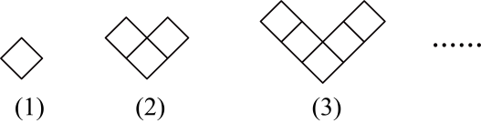
3．（24-25七年级上·陕西渭南·期末）如图是由相同大小的小圆圈按一定规律组成的，其中第①个图形中共有6个小圆圈，第②个图形中共有9个小圆圈，第③个图形中共有12个小圆圈，……，按此规律，则第24个图形中小圆圈的个数为（ ）

A．75个 B．72个 C．69个 D．66个
4．（24-25七年级上·河南平顶山·期末）如图所示，数轴上O，A两点的距离为12，一动点P从点A出发，按以下规律跳动：第1次跳动到AO的中点A1处，第2次从A1点跳动到A1O的中点A2处，第3次从A2点跳动到A2O的中点A3处．按照这样的规律继续跳动到点A4，A5，A6…An（n≥3，n）是整数）处，问经过这样2024次跳动后的点与A1A的中点的距离是（ ）

A．12−3×122021 B．9−3×122021 C．12−3×122022 D．9−3×122022
【考点19 新定义问题】
1．（24-25七年级上·浙江杭州·期中）对于任意有理数m，n定义一种新运算：m⊕n=n−m−m+n．
(1)若a=−6，b=7，求a⊕b的值；
(2)已知点A，点B在数轴上表示的数分别为−1，x，且A，B两点的距离是7，y是−−−5的相反数，求x⊕y⊕−1的值．
2．观察下列两个等式：2−13=2×13+1，5−23=5×23+1给出定义如下：我们称使等式a−b=ab+1成立的一对有理数“a，b”为“共生有理数对”，记为a，b，如：数对2，13，5，23都是“共生有理数对”．
(1)通过计算判断数对1，2是不是“共生有理数对”；
(2)若m，n是“共生有理数对”，则−n，−m “共生有理数对”；（填“是”或“不是”）
(3)如果m，n是“共生有理数对”，且m−n=4，求−5mn的值．
3．（25-26七年级上·江苏南京·阶段练习）观察下列两个等式：2×1=22+1−3，−1×1=−12+1−3.给出定义：我们称使等式ab=a2+b−3成立的一对有理数a，b为“方和有理数对”，记为a,b，如2,1，−1,1都是“方和有理数对”．
(1)数对−2,1，5,5.5中是“方和有理数对”的是______．
(2)请你再写出一对符合条件的“方和有理数对”：______(注意：不能与题目中已有的“方和有理数对”重复)．
(3)若m,2是“方和有理数对”，求2m−4m2−32m−1的值．
【压轴篇】
【考点20 数轴上的折叠与裁剪问题】
1．（24-25七年级上·辽宁鞍山·期中）数形结合在数学学习中至关重要．数学课上老师让同学们将数轴对折探究其中的数学问题．
(1)如图1，第一小组的同学将数轴对折，使表示2的点与表示−2的点重合；
①对折后表示5的点与表示________的点重合；
②对折后表示m的点与表示________的点重合；（用含m的代数式表示）
(2)如图2，第二小组的同学将数轴对折，使表示3的点与表示−1的点重合；
①对折后表示7的点与表示________的点重合；
②对折后数轴上的点A与点B重合（点A在点B的左侧），且点A与点B之间的距离为8，则点A表示的数为________，点B表示的数为________；
(3)如图3，第三小组的同学将数轴对折，使数a表示的点C与数b表示的点D重合(a<b)，经对折后数轴上的点E与点F重合（点E在点F的左侧），且点E和点F之间的距离为12，则点E表示的数为________，点F表示的数为________．（用含a，b的代数式表示）
2．（24-25七年级上·重庆丰都·期末）如图，在一条可以折叠的数轴上，从左往右依次有A、B、C三个点，它们表示的数分别是a、b、c，已知AB=12，如果以原点O为折点，将这条数轴向右对折，此时点A与点B重合，且BC=5．
(1)填空：a= ，c= ．
(2)若点C以每秒4个单位长度的速度向右运动，与此同时，点A和点B分别以每秒3个单位长度和1个单位长度的速度向左运动．设运动时间为t秒，AB−12OC的值是否随着时间t的变化而改变？请说明理由．
(3)在（2）的条件下，以点B为折点，将这条数轴向右对折，点A落在数轴上的对应点为M，当t为何值时，线段MC的长度为5？
3．（24-25七年级上·山西·期中）综合与探究
数轴是一个非常重要是数学工具，它使数和数轴上的点建立起对应关系，揭示了数与点之间的内在联系，是“数形结合”的基础．如图1，在数轴上点A表示a，点B表示数b，点C表示数c，其中b为绝对值最小的数，a与c满足a+2+c−102=0．
(1)a=______，b=______，c=______
(2)若沿点B折叠纸面，使点B左侧部分和右侧部分重合，则与点A重合的点表示的数为________；若折叠纸面，使点A与点C重合，则与点B重合的点表示的数为______．
(3)如图2，在数轴上剪下B到C的部分（不考虑宽度），并把这部分沿点D所在的位置折叠，然后在重叠部分某处剪开，得到三部分．若这三部分的长度之比为2:2:6，求点D，B之间的距离．
【考点21 利用绝对值的几何意义求最值】
1．（24-25六年级上·上海·期中）求x−1+2x−1+3x−1+⋅⋅⋅+99x−1的最小值．
2．（24-25七年级上·江苏宿迁·期中）阅读下列材料，并回答问题．我们知道a|的几何意义是指数轴上表示数a的点与原点的距离，那么|a−b|的几何意义又是什么呢？我们不妨考虑一下，取特殊值时的情况．比如考虑|5−(−6)|的几何意义，在数轴上分别标出表示−6和5的点，（如图所示），两点间的距离是11，而|5−(−6)|=11，因此不难看出|5−(−6)|就是数轴上表示−6和5两点间的距离，|a−b|的几何意义是数轴上a，b两数对应点之间的距离．
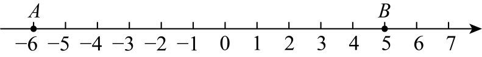
(1)当x−23=2时，求出x的值；
(2)设Q=|x+6|−|x−5|，请问Q是否存在最大值，若没有请说明理由，若有请求出最大值；
(3)设Q=|x−2|+|x−4|+|x−6|+|x−8|+…+|x−2024|，求Q的最小值，此时x的取值范围是多少？
【考点22 多绝对值的分类讨论问题】
1．数轴上A、B、C对应的数分别是a、b、c．
(1)若ac<0,a=−a,a+b>0,b<c．
①请将a、b、c填入括号内．

②化简a−b+a+c−c−b．
③若点X在数轴上表示的数为x，则x−a+x−b+x−c有最小值__________．
(2)若a+b+c=a+b−c，且c≠0，求c−3−a+b−c+1的值．
2．（24-25七年级上·浙江宁波·阶段练习）已知关于x的方程x−2−b=a有四个解，化简a+ba+b+b−ab−a+aa+bb．
3．【总结提炼】
小明学习了绝对值的性质后，有这样的思考和总结：当a>0时，a=a，则aa=aa=1；当a<0时，a=−a，则aa=−aa=−1．
【解决问题】
（1）若ab>0，则aa+bb= ．
（2）若abc<0，则aa+bb+cc= ．
【拓展提升】
（3）若abcabc+abab+aa=1，计算：bcbc−bb−acac=_________．
【考点23 由整式加减解决整除问题】
1．（24-25七年级下·河北石家庄·期末）（1）列式：设abc是一个三位数，则abc用含a，b，c的代数式表示为 ；
定义：如果一个三位数的三个数位上的数字是按从小到大排列的三个连续的正整数，则这个三位数叫作顺子数，如“123”“456”等都是顺子数．请你再举出一个顺子数： ；
推理：嘉嘉经过观察计算发现顺子数都可以被3整除．设abc1≤a≤7是一个顺子数．
（2）请用含a的代数式表示b和c；
（3）通过整式的运算，证明上述发现的结论．
2．（24-25七年级上·福建泉州·期中）在数的学习过程中，我们总会对其中一柴具有某种特性的数充满好奇，例如：定义：对于一个各个数位上的数字均不为零的三位自然数m，若m的十位数字等于其个位数字的2倍，则称这个自然数m为“好数”，当三位自然数m为“好数”时，交换m的百位数字和十位数字后会得到一个新的三位自然数n，规定F(m)=m−n90，例如：当m=384时，因为8=4×2，所以384是“好数”，此时n=834，则F(m)=m−n90=384−83490=−5．
(1)写出最大的好数和最小的好数，并分别求出它们的F(m)值；
(2)已知一个三位自然数t是“好数”，t的各个数位上的数字和记为k，若F(t)+k能被8整除，求所有满足条件的三位自然数t．
【考点24 整式加减解决图形周长问题】
1．（24-25七年级上·海南海口·期中）如图，在矩形ABCD中，有正方形AEGF，正方形JHMI，正方形KLCM，问：知道哪个正方形的面积可以得到两个阴影部分的周长之差．

2．（24-25七年级上·甘肃庆阳·期末）如图，长为a、宽为b的长方形被分割成七部分，除阴影部分P，Q外，其余五部分为形状和大小完全相同的小长方形M，其中小长方形M的宽为3．

(1)小长方形M的长为_________；（用含a的代数式表示）．
(2)若b=12.5，你能否求出阴影图形P与阴影图形Q的周长之和？若能，请求出其值；若不能，请说明理由．
3．（24-25七年级上·湖北武汉·期中）如图，有足够多的完全相同的小长方形（图1）和一个大长方形纸片．小长方形两邻边的长分别记为a，b，把小长方形纸片不重叠的摆放在大长方形上，阴影是小长方形没有覆盖的部分，分别记为S1，S2．
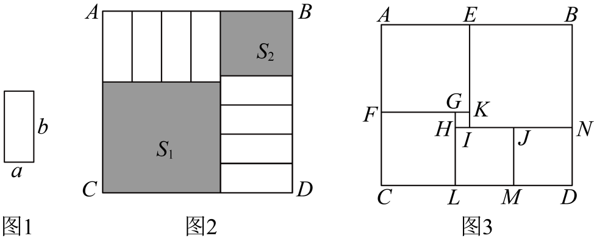
(1)如图2，若a=2，b=4，AC=10，直接写出S1的面积=____ ，S2的面积= ____；
(2)如图2，当AB=15，AC=10时，直接写出S1和S2的周长和是 ____ ；
(3)如图3，若大长方形分割为6个小正方形，且中间的最小正方形的边长是1，求大长方形的面积．
【考点25 数轴动点问题】
1.（24-25七年级上·安徽滁州·期末）将两个完全相同的长方形ABCD，EFCH按如图所示方式放置在数轴上．

(1)若点P在线段BE上，且PA+PB=12，求点P在数轴上表示的数．
(2)若长方形ABCD，EFCH分别以每秒2个单位长度和1个单位长度在数轴上相向而行，设两个长方形重叠部分的面积S，移动时间为t秒．
①在整个运动过程中，S的最大值是多少？持续时间为多少秒？
②当S是长方形ABCD的面积的一半时，求t的值．
2.（25-26七年级上·江苏扬州·阶段练习）如图，数轴上A、B、C三点表示的数分别为a、b、c，且a、b满足|a+8|+(b−12)2=0．

(1)则a= ，b= ；
(2)动点P从A点出发，以每秒10个单位的速度沿数轴向右运动，到达B点停留片刻后立即以每秒6个单位的速度沿数轴返回到A点，共用了6秒；其中从C到B，返回时从B到C(包括在B点停留的时间)共用了2秒．
①求C点表示的数c；
②设运动时间为t秒，求t为何值时，点P到A、B、C三点的距离之和为23个单位？
（24-25七年级上·广东广州·阶段练习）如图：在数轴上点A表示数−3，点B表示数1，点C表示数9，点A、点B和点C分别以每秒2个单位长度、1个单位长度和4个单位长度的速度在数轴上同时向左运动，设运动时间为t秒（t＞0）．

(1)结合数轴，完成下列问题：AB表示点A到点B之间的距离，运动之前，AB的距离为 ，A点与C点的中点为D，则点D表示的数为 ；运动t秒后，点A表示的数为 （用含t的式子表示）；
(2)若t秒钟过后，A，B，C三点中恰有一点为另外两点的中点，求t值；
(3)当点C在点B右侧时，是否存在常数m，使mBC−2AB的值为定值？若存在，求m的值，若不存在，请说明理由．